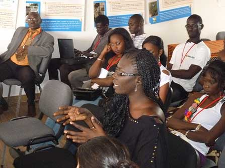
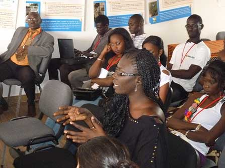

Le Sénégal est un pays passionnant. De Saint-Louis à Dakar, de Dakar à Ziguinchor, c’est une multitude de paysages de mer et de brousse, de savane sèche et de forêts au Sud.
A Saint-Louis, l’histoire coloniale transpire par toutes les façades des maisons qui ont abrité la société saint-louisienne, composées de Noirs, de Blancs et de métis.
A Dakar, c’est un mélange de riches demeures et de baraques de populations issues des migrations rurales.
Gorée est l’île du souvenir, l’île du pardon et du non-oubli. L’esclavage en fait son renom.

TOURISME SOLIDAIRE
Voyages accompagnés ou voyage avec réception sur place, à l’aéroport de Dakar. Installation dans un réceptif dont les caractéristiques correspondent à notre éthique : chaleur de l’accueil, convivialité, culture…
Durée du séjour une semaine ou dix jours
Éléments non contractuels du programme :
- Visite guidée à Gorée par le conservateur du musée de l’esclavage
- Visite de Saint-Louis du Sénégal, ville coloniale chargée d’histoire, visite de la langue de Barbarie et du village de pêcheurs de Ndar Tout
- Remontée du fleuve Sénégal à bord du « Bou El Mokdab, bateau-hôtel stationné à Saint-Louis, sur les traces des colons français du XIX siècle
- Visite du Parc national aux mille espèces d’oiseaux migrateurs
- Visite des îles Saloum et de la lagune
- Visite du sanctuaire marial de Poponguine
- Visite de l’hôpital traditionnel de Fatick et rencontre avec les guérisseurs
- Visite du lac rose de Retba et déjeuner sous la tente
- Visite du village artisanal de Soumbédioune et rencontre avec les artisans, retours de pêche des pirogues sur la plage et marché au poisson
- Dîner spectacle au club des Almadies
- Tam-tam et danse traditionnelles de jeunes filles
A l’hôtel :
- Dîner débat avec des écrivains, des historiens, des politologues, des islamologues…
- Prestations de musique et de danses sénégalaises, animations de musique traditionnelle pendant le diner…
CENTRE CULTURELS DE VACANCES
Le manque de lecture participe de l’échec scolaire à cause de la non-maîtrise de la langue de travail à l’école, d’où il ressort selon les enseignants que les élèves ne comprennent pas les questions posées. A terme, le manque de maîtrise de la langue de travail entraîne la dévalorisation sociale et professionnelle. Par ailleurs, nous déplorons chaque année le désœuvrement des enfants dans les quartiers populaires, car les parents n’ont pas les moyens d’envoyer leurs enfants en colonie de vacances. A cela s’ajoute le manque d’espaces de jeux dans les quartiers.
Or il se trouve que pendant les vacances, les écoles, souvent situées au centre des quartiers, sont inutilisées, non entretenues...
L’idée serait donc de transformer ces écoles en centres culturels de quartier pendant l’hivernage.
Objectif 1 : Transformer l’école de quartier en centre culturel saisonnier.
Objectif 2 : Favoriser la réappropriation de l’école par le milieu.
Pour ce faire :
- Réaménager l’espace de l’école de façon attractive en changeant son aspect habituel
- Repeindre les murs dès le mois de juillet et les décorer en utilisant le talent des artistes du quartier
- Aménager l’espace de l’école en espaces d’activités culturelles : coins lecture, espace spectacles, stands d’exposition…
Activités : Bibliothèque
- 1 salle de livres : consultation sur place et éventuellement prêt de livres
- 1 ou plusieurs salles de lecture publique : lectures assurées par les comédiens du quartier
- 1 stand d’exposition vente de livres détenus par les partenaires de l’école.
Activités annexes :
- Initiation à l’informatique
- Activités pour les tous petits
AVANTAGE DES CENTRES CULTURELS SAISONNIERS :
Pour les élèves :
- Contact avec le livre
- Lieu de découvertes : le livre, l’informatique, les conférences sur les métiers de demain, animations, activités artistiques
Pour l’école :
- Réhabilitation de l’école dès la fermeture des classes : peinture des bâtiments (enduit fourni par l’État, main d’œuvre assurée par les Associations sportives et culturelles (ASC) et associations de quartiers
- Reboisement des cours de récréation par les jeunes du quartier (plants fournis par l’État dans une combinaison avec les « vacances citoyennes » lancées par l’État depuis une dizaine d’années)
- Décoration de l’école par les artistes du quartier avec le soutien de l’État et des mairies
- Construction d’une scène en ciment de 10m X 10m, hauteur 1 m financé par l’État ou par notre asssociation. Cette scène en plein air restant à l’école pour les activités théâtrales, distribution des prix, spectacles, projections nocturnes, etc.
Le projet en lui-même nécessitera une très large concertation avec les partenaires de l’École avant la formulation définitive du projet. L’État aura à en donner l’impulsion.


 
